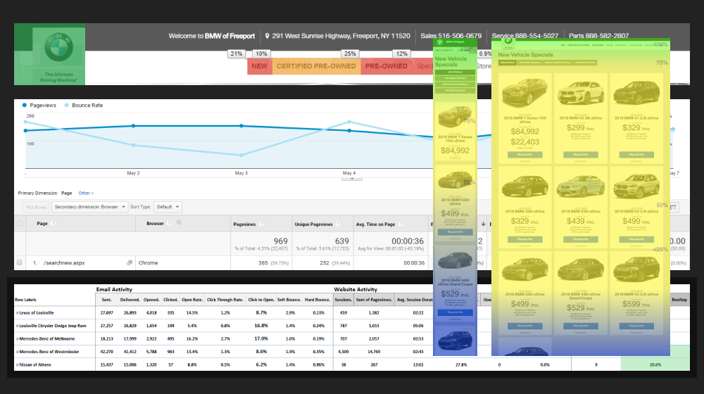
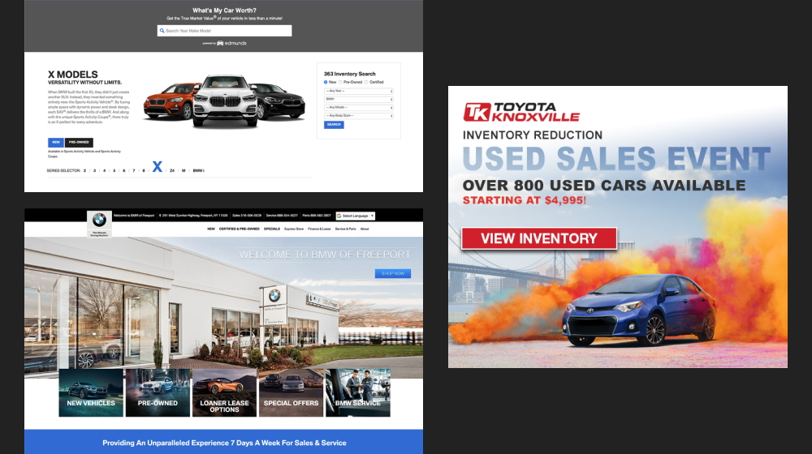
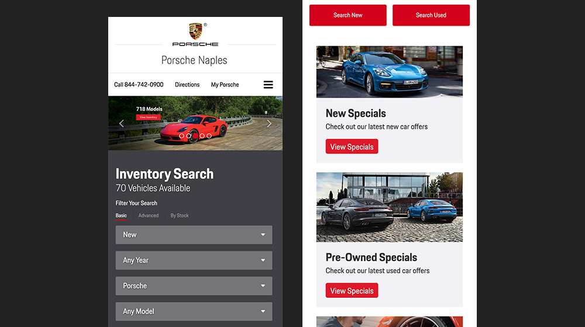

Automotive Management Services, Inc. is an all-in-one digital marketing agency that caters to all major car manufacturers, from Aston Martin to Toyota.
I started as a UX/UI designer, designing and coding display ads, websites, emails, and other website add-ons from scratch. I eventually pitched and became the manager, designer, and developer of Phalanx, a custom WordPress app that generated these deliverables via a drag-and-drop builder. It also provided project management and tracking systems for leadership, management, designers, developers, media buyers, and A/V staff.
Research

I would start web, email, and ad design projects by analyzing the requests sent to us by the account executives, and respond directly to them or with OEM compliance for any questions or additional information about the target audience or goals of their campaigns. After completion, we would look at Google Analytics, Visual Web Optimizer, heat mapping, and Campaigner (email) analytics to see what was and was not working. We would create a hypothesis, update the assets and template, and review the findings, keeping what worked and eliminating what did not.
For example, one of our biggest projects was the vehicle search modules included as the first and dominant element on their homepages. By looking at the heat mapping and interaction metrics from Google Analytics, we determined that there were two primary user groups with the same goal of locating a vehicle but with different approaches. Some already had an idea of the exact make and model they wanted, while others only had a vague idea. We implemented and A/B tested variants that allowed drop-down selection for year, make, and model, another that had clickable images indicating make and model (sedan, convertible, SUV, etc.), and a final variant that had both.
I designed and executed user tests for Phalanx directly with all departments. I’d have them walk me through how they used the system daily and show me any pain points in their user paths. This gave me insights into their natural, unguided usage. I also designed a few tasks for them to complete so that I could see if my designed user paths aligned with their actual goals.
Design

After collecting the goals and requirements from our clients or account executives, we would either create a new site, page, ad, or email campaign from scratch if the request was highly custom, or utilize a high-performing template as a boilerplate. High-fidelity mock-ups were created, passed through OEM compliance and the client for approval, and then built in Phalanx. If an asset was highly custom, we would create it from scratch, but Phalanx performed at least 90% of the assets.
I noticed this caused many problems as many of the webpages, ads, and email campaigns weren’t properly tested with Litmus, cross-browser tested, or designed based on performance analytics from Google or our email marketing performance metrics. These oversights cost our clients performance loss, as assets would either break or not be optimized.
As a solution, I designed and pitched Phalanx, a custom WordPress site that generated these assets. These website assets, emails, ads, and landing pages were designed and optimized by data from Google Analytics, heat mapping, Visual Web Optimizer, and Campaigner for performance, and built upon frameworks that work across all browsers and email clients.
Development

Phalanx also functioned as a job management, staff performance reporting, budget reporting, and client relationship management system. I built it as a custom WordPress theme with custom plugins. I worked with the SEO, email, ad, A/V, media buyer, account executive, and management teams to collect and analyze performance. I built a custom component UI library with HTML, CSS, Sass, JavaScript, and PHP that Phalanx would generate for the endpoint websites, emails, display ads, and more.